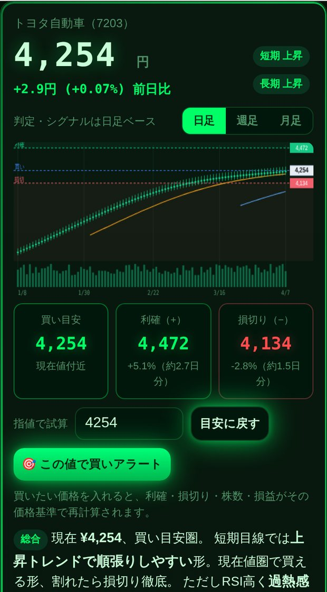

銘柄コードや会社名で検索するだけ。移動平均・ゴールデンクロス・RSI・MACD など8つの売買サインを自動判定し、買い目安・利確・損切りを自動計算。日経225の買い候補スクリーニングまで、これ1つで。
▶ ツールを無料で開く インストール不要・その場で使えます
チャートを見ても「上がるのか下がるのか分からない」「どこで買ってどこで売ればいいの？」——そんな悩みを、チャートから機械的に計算した具体的な価格で示します。感覚ではなく数字で、買う位置・利益確定の位置・損切りの位置がひと目で分かります。プロが必ずやる資金管理（1回の損失額から買う株数を逆算）にも対応。無料の日本株分析ツールとして、初心者の学習にも、スイングトレードの判断補助にも使えます。
4桁コードでも会社名（トヨタ・ソニー等）でも検索。日本語名で候補表示。
移動平均・ゴールデンクロス・RSI・MACD・ボリンジャーバンド・移動平均乖離・52週レンジ・出来高を「買い/売り/中立」で自動判定＋やさしい解説。
ATR（値動きの大きさ）基準で自動計算。各ラインを「約◯日分の値動き」で表示し、現実的かどうかがひと目で分かる。
押し目買い・ブレイク買い・様子見を状況で自動判定。「押し目は来にくい」など正直にアドバイス。
「1回の損失は◯円まで」から適切な購入株数を自動計算。S株（1株単位）にも対応。
買値を登録すると損益を自動計算。損切りが上昇に合わせて切り上がるトレイリング対応。利確・損切り到達で通知。
225銘柄から「今日の買い候補」「勢い」「押し目」「反発」などの切り口で自動抽出。
移動平均・出来高・売買ライン付き。日足／週足／月足を切り替え可能。
コード（例：7203）か会社名（例：トヨタ）を入力して実行。
売買サインの総合判定と、買い目安・利確・損切りの価格をチェック。
資金管理で株数を逆算し、買ったら保有登録。売りアラートで管理。
はい、完全無料・登録不要です。会員登録やアプリのインストールも要りません。ブラウザで開くだけで使えます。
無料の公開データを利用しており、約15〜20分の遅延があります。デイトレードではなく、数日〜数週間のスイングトレードや保有株の損益・損切り管理の補助を想定しています。
東証上場の日本株4,000銘柄以上に対応。銘柄コード（4桁）でも会社名でも検索できます。
いいえ。株価の上昇や利益を保証するものではありません。過去の株価から機械的に計算した目安を表示し、損切りルールを守る補助をする道具です。投資は自己責任で行ってください。
株価チャートのように「動くWebツール」も、当社のホームページ制作サービスで作成できます。集客できるサイト・オリジナルの便利ツールの制作をご検討の方は、お気軽にご相談ください。
INCOMEBASE のサービスを見る本ツールは過去の株価データから機械的に計算した「目安」を表示するものであり、将来の株価の上昇・下落や利益を保証するものではありません。表示される情報は投資判断の補助を目的としており、特定の銘柄の売買を推奨・勧誘するものではありません。株価データは公開情報を利用し、約15〜20分の遅延・欠損の可能性があります。実際の投資判断・売買は、ご自身の責任と判断において行ってください。本ツールの利用により生じたいかなる損害についても、提供者は責任を負いません。